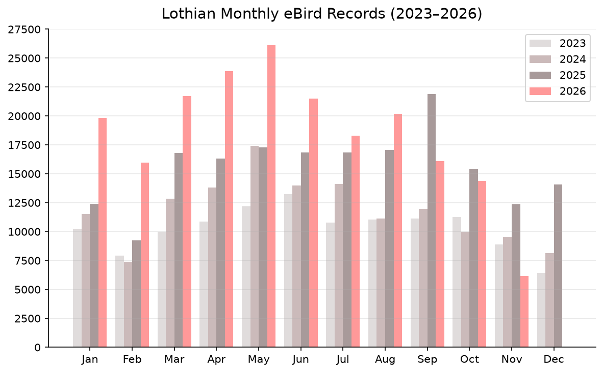

Edinburgh, East Lothian, Midlothian, West Lothian
Notable eBird sightings from the past 5 days. Includes unverified records.
In total 1936 observations of 123 species were recorded across 78 locations, based on 136 checklists submitted by 51 birders.
Sort by Species|Date
